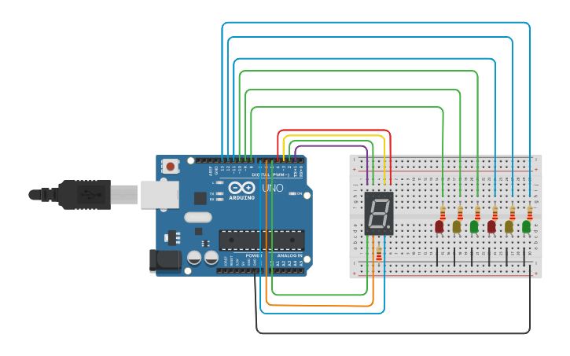

Elementos de Rede, Servidores e Componentes Eletrônicos
Configuração de Rede Interna
A configuração de rede interna da ByteCafe é projetada para garantir alta eficiência e segurança nas operações. Utilizando o Cisco Packet Tracer, nossa estrutura inclui dispositivos como switches, roteadores e cabos de alta qualidade, configurados para otimizar a comunicação entre todos os dispositivos conectados.
Configuração de Servidores
Na ByteCafe, os servidores desempenham um papel crucial para manter os serviços operacionais. Nosso Servidor de Domínio (DNS) traduz nomes de domínio em endereços IP, tornando a navegação mais amigável. O Servidor HTTP gerencia as solicitações de páginas web, e o Servidor DHCP automatiza a distribuição de endereços IP.
Equipamentos de Rede e Suas Funções
A infraestrutura de rede é composta por dispositivos essenciais: switches conectam dispositivos, roteadores interligam redes, e Access Points permitem a conexão sem fio à rede cabeada.
Resistores e Código de Cores
Os resistores são componentes usados para limitar a corrente elétrica em circuitos. Eles têm um código de cores que representa seu valor de resistência em ohms, facilitando a identificação visual. Cada cor corresponde a um dígito, multiplicador ou tolerância.
Diodo LED e Display de Sete Segmentos
O diodo LED é um componente emissor de luz muito usado em circuitos eletrônicos, com diversas aplicações em sinalização visual. Já o display de sete segmentos é um conjunto de LEDs configurados para exibir números de 0 a 9, sendo usado em painéis digitais.
Projeto Tinkercad com Arduino
O Tinkercad é uma ferramenta online que permite simular circuitos eletrônicos. No projeto exemplo abaixo, há uma captura de tela demonstrando a configuração de um circuito simples com Arduino, ideal para testar e aprender antes de construir fisicamente.
Placa Arduino
A placa Arduino é uma plataforma de prototipagem usada para criar projetos eletrônicos. Ela possui um microcontrolador e diversas portas de entrada e saída para conectar componentes e sensores, permitindo uma vasta gama de projetos de automação e controle.
Programa no IDE Arduino
O Arduino IDE é o ambiente de desenvolvimento onde os programas são escritos e carregados na placa Arduino. A linguagem de programação é baseada em C/C++, o que permite programar lógicas de controle para manipular sensores e atuadores conectados à placa.
Entradas e Saídas no Arduino
Entradas Analógicas
Entradas analógicas no Arduino permitem ler valores de sensores que variam em uma faixa contínua, como temperatura e luz. A leitura desses valores ajuda a ajustar ações e respostas no projeto.
Entradas Digitais
Entradas digitais no Arduino detectam sinais binários (0 ou 1), sendo utilizadas para acionar ou desativar componentes com base em um sinal de entrada.
Saídas Analógicas (PWM)
A saída PWM (Pulse Width Modulation) permite controlar a intensidade de dispositivos como LEDs ou motores, simulando uma saída analógica através de pulsos digitais.
Saídas Digitais
Saídas digitais no Arduino fornecem sinal de alta ou baixa tensão, controlando dispositivos de acordo com a lógica de programação.
Multímetro e Unidades de Medida
O multímetro é uma ferramenta de medição essencial para circuitos eletrônicos, capaz de medir tensão, corrente e resistência. Ele possui unidades de medida como volts (V) para tensão, amperes (A) para corrente e ohms (Ω) para resistência.